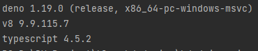
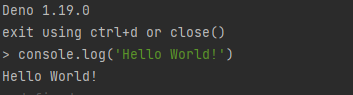
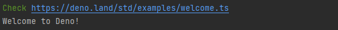

[Deno] Node.js의 대안!! Deno 알아보기

Deno를 알게 된 것은 컨퍼런스였으며, 이후 회사 업무에 녹여 넣을 수 있을지 고민하면서 Deno에 접근하게 되었다. 결론적으로 현재 회사 환경과 업무에 사용할 수는 없지만 Deno라는 기술적 가치가 매력적으로 느끼기에 사내 세미나를 진행하고 공유하게 되었다. 이렇게 공유된 내용을 Deno를 처음 접하는 사람에게도 공유하고자 포스팅을 하였다.
현재 Node.js는 V8 기반의 JavaScript Runtime으로 오랜 시간 자리매김해 왔으며, 그 생태계는 수셥년동안 안정화되고 확장되면서 성장해왔다. 하지만 이렇게 성장해오고 현재 JavaScript runtime의 기준이라 할 수 있는 이 Node.js에는 몇 가지 결함을 보완해야 할 점들이 있었다. 그로 인해 이러한 문제점을 이미 알고 있는 Node.js 개발자인 Ryan Dahl은 2018년도 JSConf EU에서 Node.js 설계 당시의 문제점들을 지적했고 이를 보완하는 새로운 Runtime인 Deno를 개발하기 시작하였다.
Deno는 현재 1.18 버전까지 릴리즈된 상태로 활발한 개발이 이어지고 있고, 앞으로 Node.js의 대체로 사용될 가능성은 작지만 Node.js의 대안으로써 사용될 가능성이 높으며 현재 Node.js의 생태계만큼 성장할 가치가 높은 Runtime이라 생각한다.
Deno를 검색하게 되면 Node.js와 비교하는 글들이 많은데 같은 Runtime이며, 같은 개발자가 개발하였기에 비교 대상이 될 수밖에 없다.
이번 포스트에서도 Node.js와 Deno에 대해 알아보고 Deno의 API 사용법보다는 Deno라는 Runtime이 Node.js와 무엇이 다르고 Node.js의 문제점이 무엇이었길래 Deno로써 다시 개발되었는지 알아보도록 하자.
Node.js
Deno를 먼저 알기 전 Node.js에 대해서 알아보도록 하자.
Node.js는 워낙 유명하기기도하고 JavaScript를 다루는 개발자라면 한번은 필수로 접하는 Runtime이기에 간단하게만 설명하면 Node.js는 Chrome V8 JavaScript 엔진으로 빌드된 JavaScript Runtime이다. JavaScript 기반으로 구성된 서버 사이드 서비스를 JavaScript로 구현할 수 있게 만든 런타임이며, 추가로 npm은 Node.js 기반의 모듈을 모아둔 집합 저장소로 Node Package Manager로 볼 수 있다.
Node.js의 자세한 설명은 빠르게 배우는 Node.js와 NPM 설치부터 개념 잡기를 참고하도록 하고, npm에 대해서는 빠르게 배우는 NPM 패키지 생성부터 배포까지 완벽 가이드를 살펴보도록 하자.
이러한 Node.js는 대표적으로 C++과 JavaScript가 개발에 사용된 베이스 언어이다. 개발된 언어를 언급하는 것은 이 부분에서 Deno와 차이를 보이기 때문이고 해당 내용은 뒤에서 설명하도록 하겠다.
Design Mistakes in Node.js
Node.js 개발자 이자 Deno 개발자인 Ryan Dahl은 2018년 유럽에서 열린 JavaScript 컴퍼런스 인 JSConf EU - 2018에서 Design Mistakes in Node라는 주제로 발표하였다. 발표 내용인 즉슨, 그가 Node.js를 개발하면서 설계에 대한 실수와 문제점에 관한 내용이었다.
그는 2012년도에 회사를 퇴사 할 때까지만 해도 Node.js는 친숙한 프레임워크로써 목표를 달성했다고 생각했다.
하지만 점차 시간이 지나고 Node.js의 규모가 커지면서 문제점을 발견하게 되었다. 수많은 시간 동안 현재의 Node.js를 만들었지만, 본질적인 문제는 설계부터였고 되돌릴 수 없는 문제점들까지 존재하였다.
Deno는 이런 문제점들을 보완하고 해결하면서 설계된 새로운 Runtime으로 볼 수 있다.
그럼 Node.js의 문제점이 무엇이었는지 Design Mistakes in Node의 내용을 살펴보도록 하자. (일부 내용은 번역된 내용)
1. Promise
Promise는 async/await 추상화에 필수적인 요소였으며, Node.js에서 Promise의 통일된 사용은 표준화 및 async/await 제공을 더 빠르게 진행할 수 있었다. 하지만 Node.js 개발 당시 2009년도에 Promise를 추가했지만 이후 2010년도에 Promise를 삭제하였다.
최초 Promise를 추가하였다면 하나의 통일된 API로 사용되었을 것이고 이로 인해 더욱더 빠른 속도를 제공할 수도 있었을 것이다. 그 결과 현재 Node Async API가 노후화되었다고 한다.
2. Security
Chrome V8 자체는 매우 좋은 보안 샌드박스였다. 하지만 Node.js는 사용자가 액세스 할 수 있는 모든 것에 엑세스가 가능하면 이는 보안 측면에서 매우 취약했다.
3. Build System (GYP)
Chrome의 V8 엔진은 GYP를 사용하기 시작했고 Node.js 역시 GYP를 채택하여 사용하였지만, 이후 2016년도 Chromium 프로젝트는 GYP에서 GN으로 변경하였지만 Node.js는 빌드 구성을 위해 GYP에 의존하는 현재 기본 모듈 에코시스템으로 인해 GN 채택 보류하였다. 이와 관련된 이슈는 #21410 - Build node with GN에서도 확인할 수 있다.
결국, Node.js는 2017년도에 GYP를 중단하게 되었으며, 현재는 node-gyp나 node-gn과 같은 애드온 빌드 도구를 이용하게 되었다.
GYP
빌드 자동화 도구이며 파이썬으로 작성된 메타빌드 시스템
GN
메타빌드 시스템으로 GYP보다 20배 빠르며 모듈별 의존성을 명확하게 파악
4. package.json
Node.js는 NPM을 포함하면서 현재의 Node.js를 만들었다고도 볼 수 있다. 하지만 package.json은 너무 불필요한 정보를 포함하고 있다. License, Repository, Description과 같은 정보는 Boilerplate에서 필요한 정보는 아니었다. 실제로 패키지를 가져올 때 파일과 URL만 사용된 경우 이 URL 경로가 버전을 정의한다. 그러므로 종속성을 나열할 필요가 없었다. 이것은 탈중앙화를 뜻하며 Deno의 개념이기도 하였다.
5. node_modules
node_modules는 모듈 간 종속성 관리, 모듈 간 문제 해결 알고리즘을 매우 복잡하게 만든다.
6. .js가 없는 require(“modules”) 필요
js 확장자가 없는 require()는 명시적이지 않으며, js 확장자가 없다면 브라우저에서는 JavaScript가 동작하지 않는다. 즉, 스크립트 태그 src 특성에서 .js를 생략할 수는 없다. 하지만 우리는 webpack의 loader와 같은 도구를 사용하여 확장자를 명시적으로 제거할 수 있지만 이러한 모듈 로더는 사용자가 의도한 바를 추측하기 위해 여러 위치에서 파일 시스템을 쿼리해야한다.
|
7. index.js
모듈의 시작점으로 볼 수 있는 index.js는 모듈 로딩 시스템을 불필요하도록 복잡하게 만들었다. 특히 package.json에는 main 속성을 통해 모듈의 시작점이 되는 파일을 명시하므로 package.json을 지원하면서부터는 더욱 불필요하게 되었다.
이는 그저 index.html로부터 시작된 발상이었다.
여기까지 Node.js와 Node.js 개발 시 실수에 대한 몇 가지를 간단하게 알아보았고 이제 이 내용을 상기하면서 Deno를 알아보도록 하자.
Deno
2020년도 05월에 V1이 릴리즈되었으며 현재 버전 v1.18.x 버전으로 아직은 따끈따끈한 오픈소스이다.
Deno는 Chrome V8 엔진을 기반으로 하는 JavaScript와 TypeScript 런타임이며, Node.js의 개발자인 Ryan Dahl에 의해 Node.js의 내재된 많은 문제 해결을 중점적으로 설계되었고 개발되고 있다.
Node.js와는 다른 게 Rust로 구축되어 안전하고 빠른 것을 장점으로 꼽을 수 있다. 특히 TypeScript를 지원하므로 TypeScript를 사용할 시 별다른 도구 없이 바로 사용할 수 있다.
여담으로 Deno 이름의 유래는 Node의 단어를 앞뒤로 바꿔서 Deno라고 부른다고 한다.
Trend
State of JavaScript award
2021 state of javascript의 JavaScript Runtime 부문을 보면 생각대로 Node.js가 압도적인 것을 알 수 있다.
Deno의 경우 고작 5.6%의 응답밖에 없지만 릴리즈 시기로 본다면 적은 표는 아니라고 생각한다.

Github
Github의 경우를 보면 Deno의 경우 Start: 80.3k, Fork: 4.3k이며, 이에 반해 Node.js는 Start: 85.5k, Fork: 22.8k이다.
이걸로 유추해 볼 만한 정보는 크지 않지만 Deno가 릴리즈 대비 Start 수를 보면 많은 개발자들이 눈여겨 볼만큼 관심도가 높다는 걸 알 수 있다.
| Deno | Node.js | |
|---|---|---|
| Star | 80.3K | 85.5K |
| Fork | 4.3K | 22.8K |
Deno VS Node.js
Deno와 Node.js를 비교해보자.
사실 이 두 Runtime은 비교 대상이 아니다. 위에서 설명했듯이 이미 Deno 자체가 Node.js로부터 파생했다고 볼 수 있기 때문이다. 설계 자체로 본다면 잘못된 부분을 개선한 것이 Deno라고 하였지만 사실상 문제점은 Node.js 내부에서도 해결이 된 것이기 때문이다. 하지만 엄연히 두 Runtime은 기술적으로 차이를 보이기 때문에 각 Runtime의 목적성이나 개념을 뒤로하고 기술적인 차이만 보자.
| Node.js | Deno | |
|---|---|---|
| Base Language | C++, JavaScript | Rust, TypeScript |
| Language | JavaScript | JavaScript, TypeScript |
| Package Manager | NPM | URL (.ts/.js modules) |
| importing Package | CommonJS | ES Modules |
| Async | CallBacks(no plans to upgrade) | Promises(modern ECMAScript) |
| Security | Full Access | Permissioned Access |
| TypeScript Support | Not Built In | Built In |
| Upgrade | Installer | Command |
** Base Language / Language **
Deno의 베이스가 되는 언어는 Rust와 TypeScript이다. Rust는 다른 언어에 비해 러닝 커브가 길고 까다롭긴 하지만 매우 안정적이고 빠르다는 장점이 있다. 그렇기 때문에 Deno는 Node.js보다 안정적으로 볼 수 있으며 보안 측면에서도 보완이 되었다. 또한 TypeScript로 작성함으로써 자연스럽게 TypeScript까지 지원하도록 설계되었다.
** Package Manager **
Design Mistakes in Node에서 언급한package.json과node_modules의 대안으로 Deno는 패키지 관리 시스템이 없고, URL로 처리하게 된다. 물론 뒤에 확장자는 포함한다. 이 URL의 경로가 버전 정보가 되기 때문에 package.json과 같은 명세서가 불필요하다.
** importing Package **
Deno의 목표 중 하나는 항상 최신 브라우저와의 호환성을 목표로 하며, 최신 Modern ECMAScript 기능을 지원한다. 그렇기 때문에 Deno의 모듈 import 방식은require()가 아닌 ES Module을 사용하며import방식으로 사용한다.
** Async **
비동기 방식 역시Design Mistakes in Node에서 언급한 내용이다.
Node.js의 비동기 방식은 크게 CallBacks 메커니즘으로 되어 있으며 이에 대해서 이제는 업데이트할 예정이 없다. 하지만 Deno의 경우 애초에 설계부터 Promise 방식을 지원하고 모든 비동기 작업은 Promise를 반환한다.
** Security **
가장 이슈가 되고 화두 되었던 항목이 바로 보안이다.
Node.js의 경우 모든 사용자가 모든 정보에 Access 할 수 있다. 하지만 Deno는 실행 환경이 되는 샌드박스 안에서 코드를 실행하는 방식으로 분리하여 권한별 접근을 허용하고 있다.
** TypeScript Support **
Deno는 일부 TypeScript로 작성되었으며, TypeScript 지원에 필요한 도구들을 내장하고 있다. 즉, TypeScript를 사용하기 위해서 별도 외부의 모듈이 필요 없다.
** Upgrade **
Node.js의 경우 상위 버전으로 업그레이드를 하기 위해서는 설치 파일을 다운로드하여 설치하는 방법과 버전 관리 모듈인n을 설치하여 업그레이드를 해야 하지만 Deno의 경우upgrade명령어를 통해서 손쉽게 업그레드할 수 있다.
** Deno Upgrade **
|
Deno의 특징
Deno의 특징은 결국 Design Mistakes in Node를 해결한 내용이다.
추가로 Deno만의 특징을 살펴보면.
- 단일 실행 파일 제공 및 배포
- ~25MB 압축 실행 파일만 있으면 실행 가능
- Code Formatter / Linter / Test Runner와 같은 Utility 내장
- 모듈 로드를 위해 URL 사용
- 최초 모듈 실행 시 모듈을 캐싱하기 때문에 이후 오프라인에서도 동작
- Bash 또는 Python으로 작성되었을 수 있는 Utility Script 대체 가능
- 안정적인 Scripting과 항상 최신 브라우저와의 호환이 목표
Deno Echo System
Deno의 단점이라 하면 에코 시스템 및 커뮤니티가 부족하다는 점이다. 이는 아직 릴리즈가 얼마 안 되었기에 시간이 해결해줄 문제이다.
에코 시스템과 커뮤니티의 활성화는 개발자의 개별 개발 능력과 개발 처리 속도에 많은 영향을 주기 때문에 현재로서는 처음부터 Deno에 접근하기에는 러닝 커브가 높다.
보통 Deno의 Strandard 모듈은 Denoland에서 직접 확인하고 사용할 수 있으며, 처음으로 시작하는 사람을 위해 몇 가지 레퍼런스를 남기겠다.
Official
- Official Site
- Deno API Reference
- Deno Unstable API Reference
- Deno Standard Library
- Deno Third Party Libraray
Community
여기까지 Deno에 대해서 알아보았다.
이제 Deno의 설치부터 기본적인 동작과 몇 가지 라이브러리 사용법을 알아보자.
Deno 설치
Deno는 종속성 없는 단일 실행 파일로 제공되며, 운영체제별 여러 설치 방법이 있다.
이외에 바이너리 파일로 설치를 원한다면 Releases Page에서 다운로드하여 설치하면 된다.
Shell(Mac, Linux)
|
PowerShell (Windows)
|
Homebrew (Mac)
|
Chocolatey (Windows)
|
Scoop (Windows)
|
|
Deno 설치에 있어서 필요한 기타 설치 옵션은 Deno Install에서 확인하자.
Deno 실행
설치를 완료하였으면 deno를 통해 확인해 보자.
|
Result

|
Result

Deno의 버전 또는 log가 찍힌다면 정상적으로 설치된 것이다.
이제 간단한 예제를 활용해 보자.
Example
Deno를 설명 할 때 Deno는 패키지 관리가 없다. 모든 게 URL 기반으로 동작한다. Deno std 라이브러리의 예제를 실행해 보도록 하자.
welcome.ts
|
결과

Deno run을 통해 실행하며 별다른 TypeScript 설정 없이 https://deno.land/std/examples/welcome.ts를 실행하였다. https://deno.land/std/examples/welcome.ts로 접속해 보면 실행되는 코드를 볼 수 있다.
Deno의 명령어는 Deno -h를 통해서 확인할 수 있다.
Permission
Deno는 Node.js와는 달리 실행 환경이 되는 샌드박스 안에서 코드를 실행하는 방식으로 분리하여 권한별 접근을 허용한다고 하였다.
권한별 허용이 어떻게 동작되는지 예제를 통해서 살펴보자. 예제는 express와 같은 간단한 로컬 서버를 실행시키는 예제이다.
|
결과
위 내용처럼 error: Uncaught PermissionDenied 오류가 발생할 것이다. 이는 특정 네트워크에 접근하기 위해서는 권한이 필요하다는 내용이다.
Deno는 기본적으로 안전하다. 따라서 특별히 특정 기능을 활성화하지 않는 한은 Deno로 실행되는 프로그램은 파일, 네트워크 또는 환경에 액세스할 수 없다.
보안에 민감한 기능에 액세스하려면 커맨드 옵션 또는 런타임 권한 프롬프트를 통해 실행 스크립트에 권한이 부여되어야 한다.
아래 명령어로 다시 실행해보도록 하자.
|
결과
--allow-net을 통해 네트워크 접근에 대한 권한을 부여함으로써 실행할 수 있다는 것을 알 수 있다.
Deno에는 --allow-net과 같이 권한을 부여하는 플래그 몇 가지를 가지고 있다. 확인해보도록 하자.
Permissions list
|
| OPTIONS | Description |
|---|---|
| –allow-env | 환경 변수 접근 권한 허용 |
| –allow-hrtime | 고해상도 시간 측정 권한 허용 |
| –allow-ffi | 동적 라이브러리 로드 권한 허용 |
| –allow-read | 파일 시스템 읽기 권한 허용 |
| –allow-write | 파일 시스템 쓰기 권한 허용 |
| –allow-run | 하위 프로세스 실행 권한 허용 |
| –allow-net | 네트워크 접근 권한 허용 |
| –allow-all, -A | 모든 권한 허용 |
권한과 관련된 자세한 내용은 Deno Permission에서 확인하자.
Deno Standard Modules
Deno 공식 페이지에는 Standard Library가 있다. 이는 외부 종속성이 없으며 Deno Core 팀에서 검토하고 반영하는 표준 모듈의 저장소이다. 기여자로서 충분히 PR(Pull Request)를 보낼 수 있으며 언제든지 사용할 수 있다. 다만 완벽하게 안정적인 버전이 아니며, API가 변경되는 항목들이 많기 때문에 Deno 버전과 맞게 호환되도록 마이그레션이 자주 필요하다.
공식 모듈에서 몇 가지를 가지고 사용하는 방법을 알아보자. 사용 방법은 복잡하지 않기 때문에 누구나 쉽게 사용할 수 있을 것이다. 참고로 Standard Library경로에서 example에는 예제들이 있으니 확인해보기 바란다.
HTTP
HTTP 모듈은 HTTP 클라이언트와 서버 구현을 제공하는 모듈이며, 서버, 파일 서버, HTTP 상태 코드 등 여러 항목을 제공한다.
http-server.js
|
run
|
http://localhost:8000 접속하여 확인해보자.
fs
Node.js의 fs 모듈과 같은 개념이다. fs 모듈은 파일 시스템을 조작할 수 있다.
파일 읽기(--allow-read) 및 쓰기(--allow-write) 권한을 필요로 한다.
file.js
|
run
|
해당 경로에 foo라는 빈 폴더가 생성되는 것을 확인할 수 있다.
datetime
datetime은 날짜와 시간 구문을 생성 또는 변환하는 도구이다.
datetime.js
|
run
|
Third Party Library
Deno에서도 외부 모듈을 사용할 수 있다. Third Party Library는 Deno 스크립트용 호스팅 서비스로 Github에 저장된 오픈 소스 모듈의 릴리스를 캐시하고 하나의 기억하기 쉬운 도메인으로 제공한다.
https://deno.land/x/IDENTIFIER@VERSION/FILE_PATH가 기본 형식이며, 버전을 생략하면 모듈의 가장 최신 버전이 기본적으로 사용된다.
가장 흔히 사용할 수 있는 lodash 모듈을 사용해보자. lodash가 제공하는 URL을 Import하여 사용해보자.
deno-lodash.js
|
run
|
Deno Built-In Tooling
Deno는 TypeScript 지원에 필요한 도구들이 내장되어있어서 Deno에서 TypeScript를 사용 시 외부 도구를 추가할 필요가 없다고 하였다. TypeScript뿐만 아니라. compiler, runner, linter 등 몇 가지 도구들을 내장하고 있다.
| Built-In | Command | Description |
|---|---|---|
| bundler | deno bundle [URL] |
모든 종속성을 포함하는 단일 파일 출력 |
| compiling executables | deno compile [–output |
실행 파일로 컴파일 |
| installer | deno install [–output |
실행 가능한 코드 설치 및 배포 |
| documentaion generator | deno doc |
JSDoc 문서 |
| dependency inspector | deno info [URL] |
모든 종속성 검사 |
| formatter | deno fmt |
코드 포맷터 |
| repl | deno relp |
대화식 스케폴딩 도구 |
| test runner | deno test |
javascript, typescript 단위 테스트 실행기 |
| linter | deno lint |
코드 Syntax 검사 |
Deno에 대해 기술적으로 깊이 다루지는 않았으며, Deno의 히스토리와 기본적인 사용법에 대해 알아보았다.
Deno에 대한 결혼부터 말하자면 이 포스트의 제목과 같다.
Deno는 Node.js의 대체가 아닌 대안
- - -앞으로 Deno가 어떻게 성장하고 JavaScript와 TypeScript의 생태계에 어떤 영향을 줄지는 아직 모른다.
이미 많은 생태계를 생성한 Node.js와는 다르게 이제 새싹을 핀 Deno이기 때문이다. Node.js 생태계는 수십년동안 이어져왔기 때문에 그만큼 안정적이고 진보되었다. 또한, 긴 시간 동안 많은 프로젝트에 채택되고 사용되어 왔기 때문에 사실상 표준에 가깝다.
물론 Deno의 철학과 기능은 매우 뛰어나지만, 아직 초기 단계에 불과하므로 프로젝트 진행에 필요한 기술로 채택되기는 부담이 있다. 하지만 점차적으로 많은 프로젝트가 TypeScript를 채택함과 사용 빈도가 증가함에 따라 자연스럽게 Node.js의 대안으로 사용될 것으로 생각된다.